Бангкок — наши места
Наш топ-10
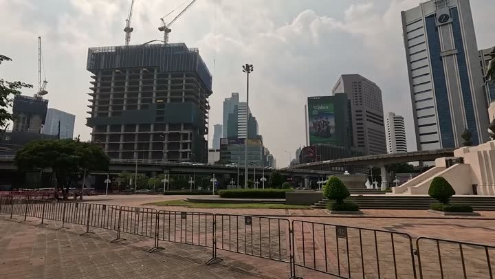
Маханакхонсмотровая · 👍 Советуем · средне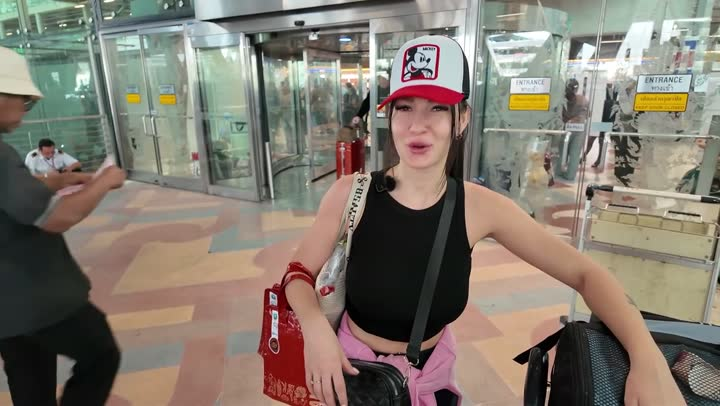
Бангкокгорода и районы · 👍 Советуем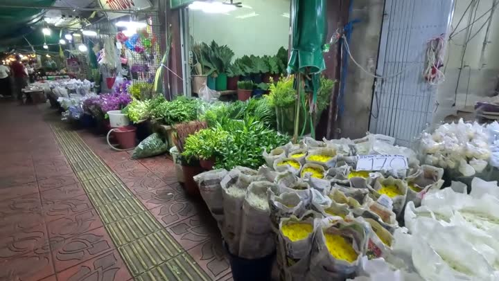
Цветочный рынокрынок · 👍 Советуем · дёшево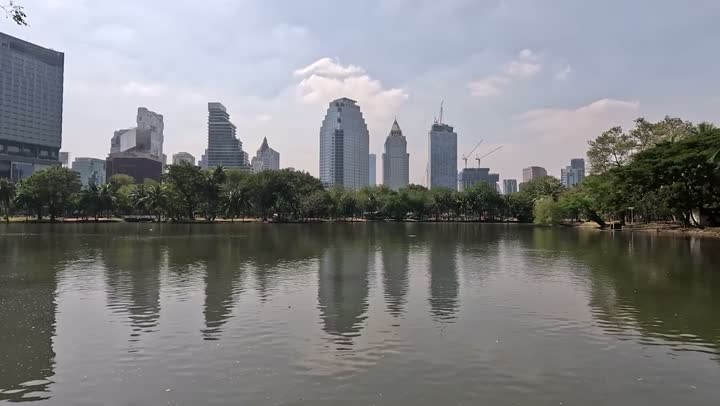
Парк Люмпинипарк и сад · 👍 Советуем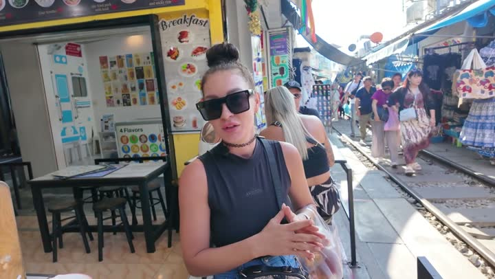
Храм Сам Пхран (башня дракона)храм · 👍 Советуем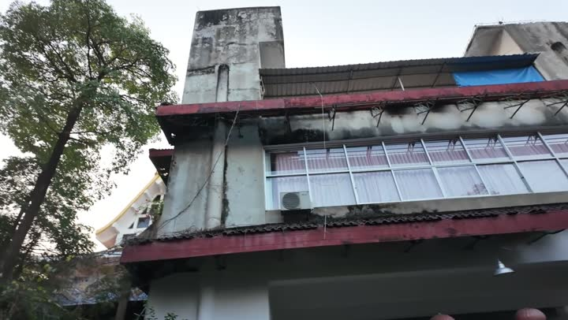
Сидячий Буддахрам · 👍 Советуем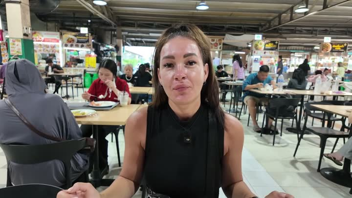
Кхао Сойкафе · 👍 Советуем · дёшевоИкон Сямторговый центр · 👍 Советуем · среднеБуфет за 50 бат у парка Люмпинибуфет · 👍 Советуем · дёшево Фудкортуличная еда · 👍 Советуем · средне
Фудкортуличная еда · 👍 Советуем · среднеГде поесть — 8
Фудкортуличная еда · 👍 Советуем · средне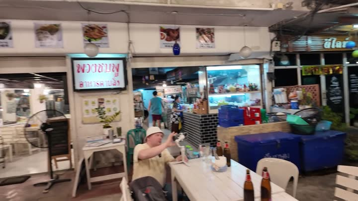
Кафе у отеля в Бангкокекафе · 👍 Советуем · средне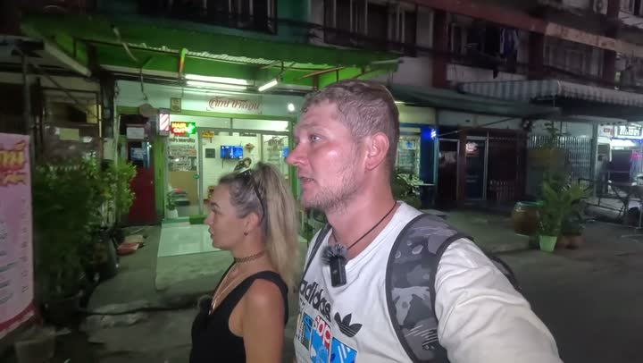
Том Ям ресторанресторан · 👍 Советуем · дёшево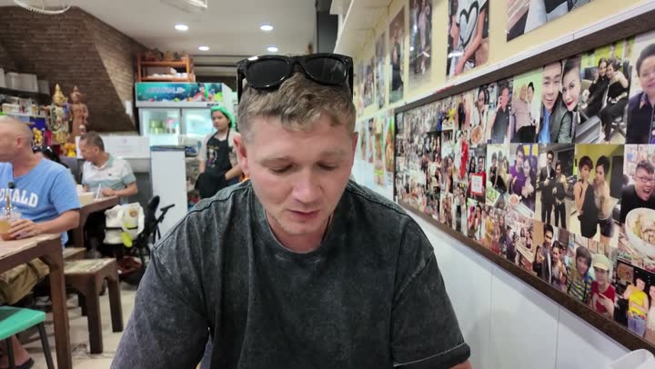
Little Beкафе · 👍 Советуем · дорогоБабл-ти «Арин Ча»кофейня и десерты · 👍 Советуем · дёшево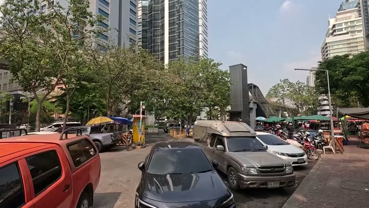
Буфет за 50 батбуфет · 🤔 На любителя · дёшевоБесплатно — 6
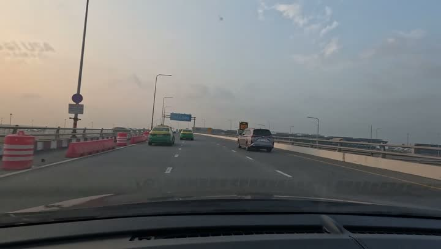
Аэропорт Суварнабхумиаэропорт · 👍 Советуем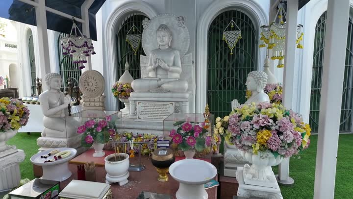
Португальский кварталдостопримечательность · 👍 Советуем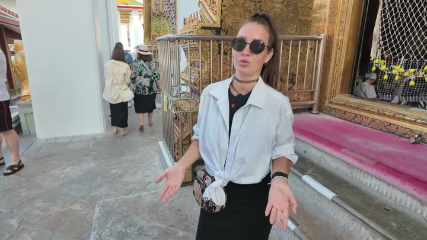
торговый центр Icon Siamторговый центр · 🤔 На любителя · дорого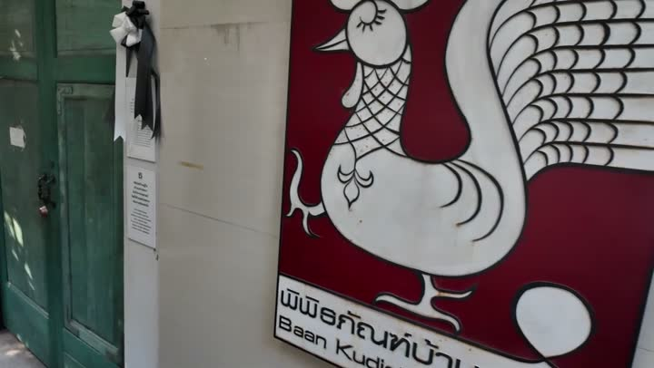
Банкудичин музеймузей · 🤔 На любителяС детьми — 10
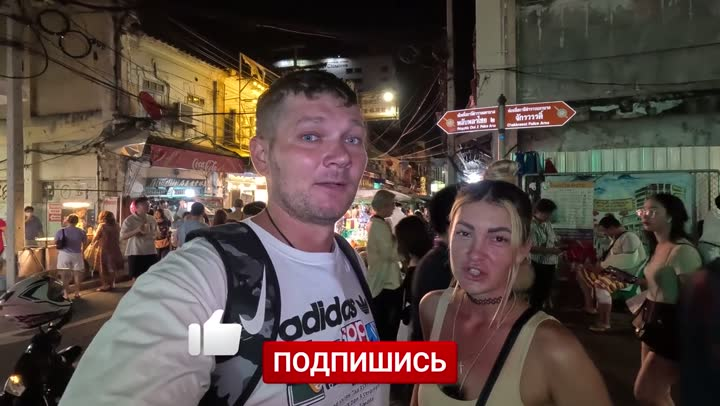
Чайна-таун Бангкокарынок · 👍 Советуем · средне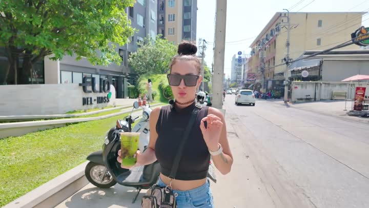
Рынок Мэклонг (поезд на рынке)рынок · 👍 Советуем · дёшево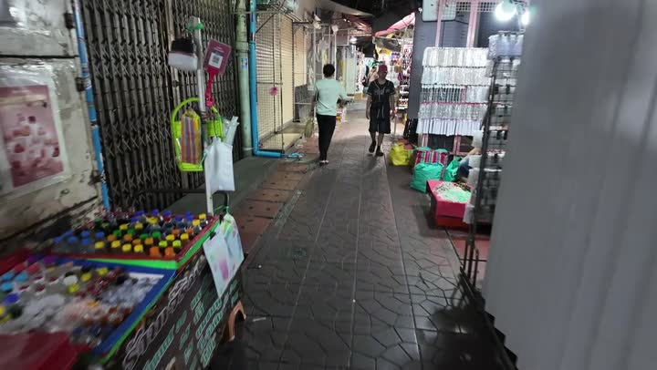
Китайский квартал (Чайнатаун)рынок · 👍 Советуем · дёшево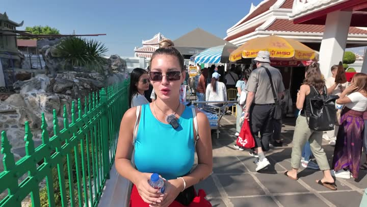
Храм Ват Арунхрам · 👍 Советуем · средне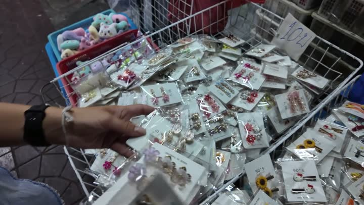
Улица Чайнаундостопримечательность · 👍 Советуем · дёшево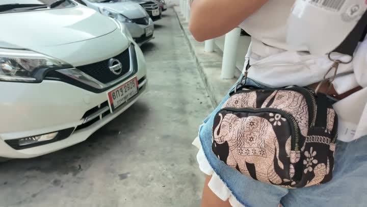
Храм Батарумхрам · 👍 Советуем · дёшево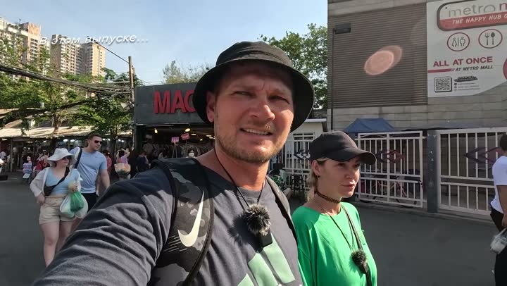
Рынок на рельсах Мэкхлонгрынок · 👍 Советуем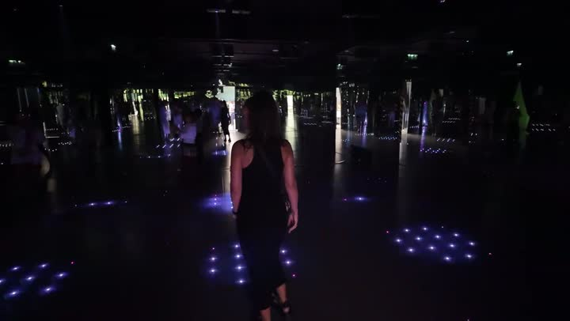
Интерактивный музеймузей · 👍 СоветуемОтель в Бангкокеотель · 🤔 На любителяКрасивые виды — 10
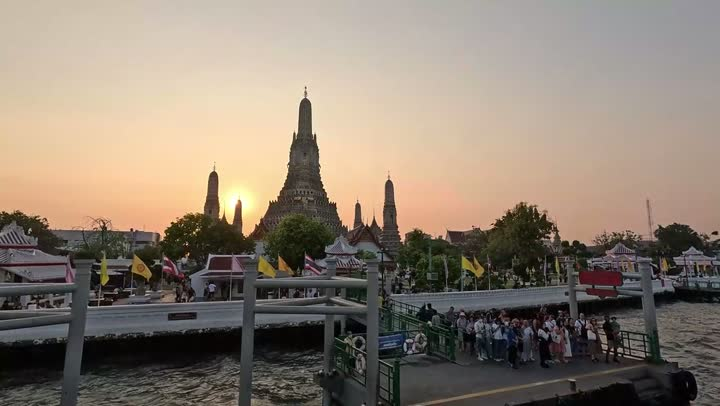
Храм Ват Ратчанаддахрам · 👍 Советуем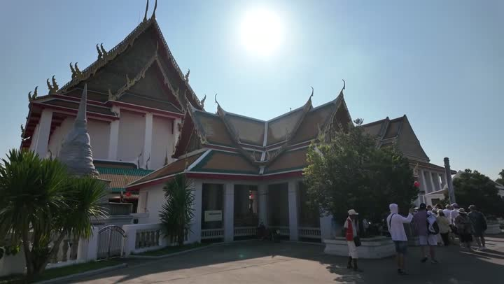
храм Вотколана Митхрам · 🤔 На любителяторговый центр Icon Siamторговый центр · 🤔 На любителя · дорогоРынки и покупки — 17
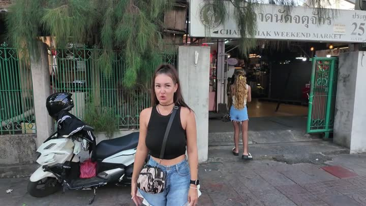
рынок Чатучакрынок · 👍 Советуем · дёшевоЧайна-таун Бангкокарынок · 👍 Советуем · среднеРынок Мэклонг (поезд на рынке)рынок · 👍 Советуем · дёшевоКитайский квартал (Чайнатаун)рынок · 👍 Советуем · дёшевоРынок на рельсах Мэкхлонгрынок · 👍 Советуем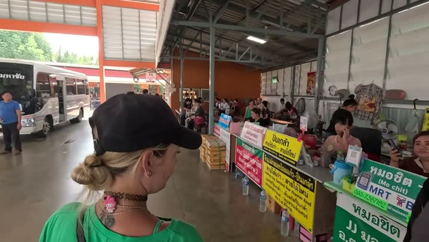
Рынок в Бангкокерынок · 👍 Советуем · дёшево Сиам Парагонторговый центр · 👍 СоветуемAmazing Thailand Gift Counterмагазин · 👍 Советуем
Сиам Парагонторговый центр · 👍 СоветуемAmazing Thailand Gift Counterмагазин · 👍 Советуем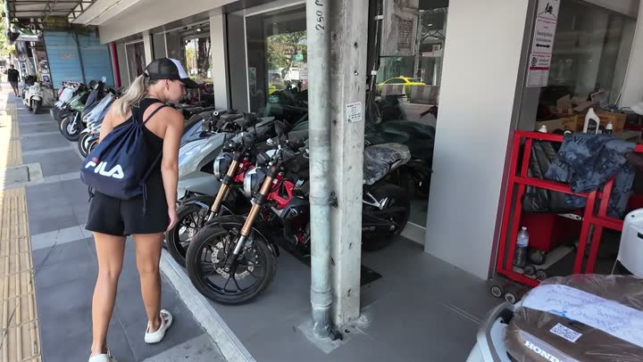
BigCсупермаркет · 👍 Советуем · среднеCentral Worldторговый центр · 🤔 На любителя · дорогоБюджетно — 17
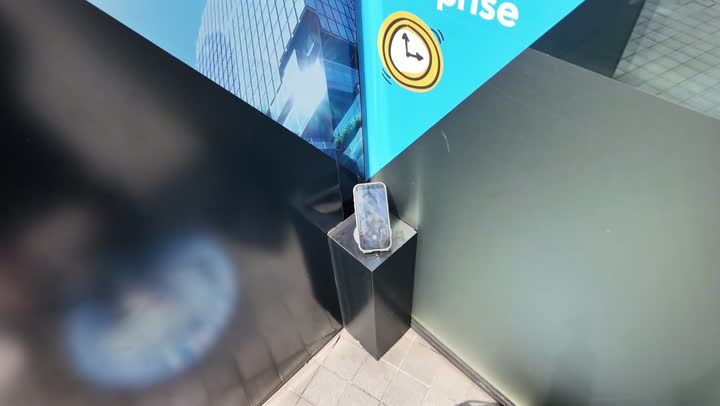
Храм Черепах Праунхрам · 👍 Советуем · дёшевоРынок Мэклонг (поезд на рынке)рынок · 👍 Советуем · дёшево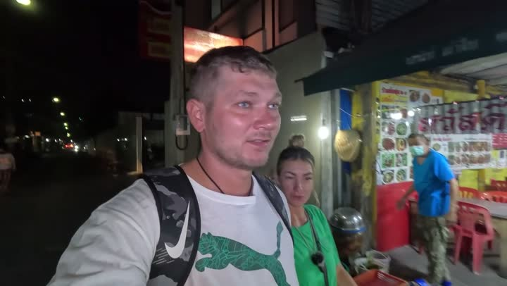
Chinatownдостопримечательность · 👍 Советуем · дёшевоКитайский квартал (Чайнатаун)рынок · 👍 Советуем · дёшевоРечной трамвай по Чаупхраетранспорт · 👍 Советуем · дёшевоТом Ям ресторанресторан · 👍 Советуем · дёшевоУлица Чайнаундостопримечательность · 👍 Советуем · дёшевоМетро Бангкокаметро · 👍 Советуем · дёшевоЧастые вопросы — Бангкок
Где вкусно и недорого поесть в Бангкоке?
Рекомендуем посетить буфет за 50 бат, где можно набрать столько еды, сколько захочешь, или кафе HP'S на шестом этаже торгового центра.
Какие музеи стоит посетить в Бангкоке?
Посетите интерактивный музей с тематическими комнатами и световыми шоу, а также Банкудичин музей, чтобы узнать больше о португальском наследии города.
Как лучше провести время с семьей в Бангкоке?
Сходите в парк Люмпини, где можно погулять среди небоскребов, покататься на катамаранах и заняться спортом. Также посетите цветочный рынок, где дети смогут насладиться яркими цветами и ароматами.
Какой отель выбрать в Бангкоке?
Если хотите сэкономить, остановитесь в отеле в центре города, где завтрак включен, есть тренажерный зал и бассейн. Если предпочитаете комфорт, рассмотрите вариант отеля Бан Танива, несмотря на его устаревший вид.
Все места — 50
Рынки, ТЦ и магазины — 17
- Amazing Thailand Gift Counter 👍 Советуем
- BigC 👍 Советуем
- Central World 🤔 На любителя
- Автосалон «Макларен» 🤔 На любителя
- Икон Сям 👍 Советуем
- Китайский квартал (Чайнатаун) 👍 Советуем
- Рынок Мэклонг (поезд на рынке) 👍 Советуем
- Рынок в Бангкоке 👍 Советуем
- Рынок на рельсах Мэкхлонг 👍 Советуем
- Сиам Парагон 👍 Советуем
- Торговый центр Siam Paragon 🤔 На любителя
- Уличный рынок
- Цветочный рынок 👍 Советуем
- Чайна-таун Бангкока 👍 Советуем
- базарчик 🤔 На любителя
- рынок Чатучак 👍 Советуем
- торговый центр Icon Siam 🤔 На любителя
Транспорт — 5
- BTS Skytrain (Бангкок) 👍 Советуем
- Аэропорт Суварнабхуми 👍 Советуем
- Метро Бангкока 👍 Советуем
- Речной трамвай по Чаупхрае 👍 Советуем
- станция метро 👍 Советуем
Достопримечательности — 14
- Chinatown 👍 Советуем
- Бангкок 👍 Советуем
- Банкудичин музей 🤔 На любителя
- Интерактивный музей 👍 Советуем
- Маханакхон 👍 Советуем
- Португальский квартал 👍 Советуем
- Сидячий Будда 👍 Советуем
- Улица Чайнаун 👍 Советуем
- Храм Батарум 👍 Советуем
- Храм Ват Арун 👍 Советуем
- Храм Ват Ратчанадда 👍 Советуем
- Храм Сам Пхран (башня дракона) 👍 Советуем
- Храм Черепах Праун 👍 Советуем
- храм Вотколана Мит 🤔 На любителя
Еда — 8
- Little Be 👍 Советуем
- Бабл-ти «Арин Ча» 👍 Советуем
- Буфет за 50 бат 🤔 На любителя
- Буфет за 50 бат у парка Люмпини 👍 Советуем
- Кафе у отеля в Бангкоке 👍 Советуем
- Кхао Сой 👍 Советуем
- Том Ям ресторан 👍 Советуем
- Фудкорт 👍 Советуем
Медицина — 1
Отели — 2
- Отель Бан Танива 👎 Не советуем
- Отель в Бангкоке 🤔 На любителя
Природа — 1
- Парк Люмпини 👍 Советуем
Развлечения — 1
- Патае Пада Media 👍 Советуем
Бары и ночная жизнь — 1
- Тусовочная улица Бангкока 🤔 На любителя
Атлас мест канала «Юля и Дима / БЕЗ ТОРМОЗОВ». Описания составлены по нашим роликам; цены — на момент съёмки. Нашли неточность — напишите нам в Telegram.